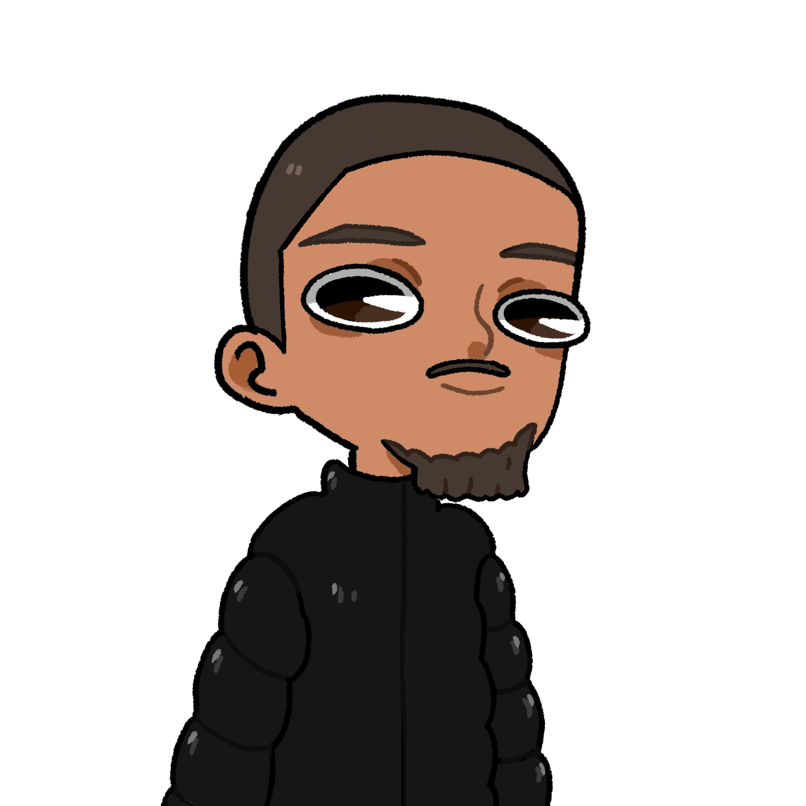

COMMENT ?!
COMMENT ?!
Amlaetxhis s’était réuni dans le bureau impérial, lorsque Yann avait appris le retour de Léopold. Il valait mieux être à plusieurs pour affronter la colère de l’Empereur…
Pourtant j’avais payé Alan pour les induire en erreur !
 Il faut croire qu’ils ont été plus convaincant…
Il faut croire qu’ils ont été plus convaincant…
Je savais que j’aurais dû lui donner plus que 2€.
 Du coup qu’est-ce qu’on fait ?
Du coup qu’est-ce qu’on fait ?
On déploie l’Élite, et on regarde le sophisme disparaître face à la supériorité numérique de nos rangs !
Je le sens mal ce plan…
 Ah non tu recommences pas !
Ah non tu recommences pas !
C’est bon, j’ai fait un topic, ils sont sûrement déjà dans le hall près à…
BOM
C’était quoi ça ?
 Rien à mon avis. Ça doit être quelqu’un qui a renversé un vase…
Rien à mon avis. Ça doit être quelqu’un qui a renversé un vase…
Pendant ce temps, au Rez-De-Chaussée
 Samy je vais vraiment t’en coller une un jour !
Samy je vais vraiment t’en coller une un jour !
 Rooh ça va ! C’est juste un mur et un bus ! Et puis, on est arrivé plus vite à l’intérieur c’est ce qui compte non ?
Rooh ça va ! C’est juste un mur et un bus ! Et puis, on est arrivé plus vite à l’intérieur c’est ce qui compte non ?
 C’est ce qu’on appelle une entrée fracassante…
C’est ce qu’on appelle une entrée fracassante…
 Putain tu fais encore une blague comme ça, je te déboîte mec !
Putain tu fais encore une blague comme ça, je te déboîte mec !
Samy descendit du bus, dont l’avant avait atterrit dans les cuisines.
Bon, je pense qu’on devrait être discret, et ne p…
ALERTE !! Des intrus !
Et putain…
De toute façon on a déjà détruit un mur, donc bon, c’est pas si mal !
Putain mais… c’est quoi tout ce monde ?! On ne passera jamais !
Regarde leurs corps de fragiles, ce sont juste des forumeurs. Ils se pensent puissants en groupe, alors que ce ne sont que des boules de haine faibles et mal aimés.
Samy sortit son fusil à pompe de sous le siège conducteur, et retourna dans le hall.
Hey ! Jonathan ! Regarde ce que j’ai trouvé !
Ivan sortit une splendide cireuse toute neuve, qui faisait baver d’envie Samy. Jonathan la saisit par le manche, et l’abattit violemment sur le crâne de deux forumeurs, qui s’effondrèrent sur le coup. Ils se mirent alors à grogner, et adoptèrent une position d’attaque.
Ok, ça va chier. À mon signal, on fonce vers l’escalier.
…
 …
…
…
GO !!
Samy tira des coups de fusils dans le tas, tandis que Jonathan brandissait sa cireuse dans tous les sens. Aden, qui se battait au corps à corps, protégeait leurs arrières. Cependant, il ne vit pas le forumeur qui lui sauta dessus depuis un balcon. Alexis bondit dans les airs, et lui donna un violent coup de tête, sauvant ainsi Aden. Malgré leur supériorité écrasante, l’Élite ne parvenait pas à briser leurs rangs.
Ils sont trop nombreux ! On pourra jamais y arriver…
 MROOOAAARR
MROOOAAARR
Les forumeurs firent tous un pas en arrière, surpris par la puissance de la voix de Jonathan, qui avait mis un bandeau sur son front. Il s’était également équipé de deux mitrailleuses lourdes.
Attend quoi ? Il les a trouvés où ces…
Avant que Samy ne puisse finir sa protestation, Léopold le plaqua à terre, alors que Jonathan tirait sur tout ce qui bougeait, en hurlant bien sûr. Lorsque la salle redevint silencieuse, Jonathan jeta ses armes, qui explosèrent derrière lui. Il en profita alors pour s’équiper de lunettes de soleil.
C’est à la fois stylé, et ridicule.
Ils grimpèrent les marches doucement, en prenant garde qu’il ne reste aucun membre de l’ex-Élite. Après des passages dans des couloirs, des ascenseurs, et un détour aux toilettes, ils arrivèrent devant la lourde porte du bureau impérial.
 On toque ?
On toque ?
 Tu veux pas qu’on lui envoie un message de confirmation d’arrivée non plus ?
Tu veux pas qu’on lui envoie un message de confirmation d’arrivée non plus ?
 TOOOH !
TOOOH !
BOM
Alexis fonça sur la porte, et s’écrasa dessus sans succès.
 Laisse-moi faire chef.
Keny sortit un petit outil en métal.
Tu vois ça chef ? C’est le meilleur atout du colonel ! Avec ça, les portes c’est de l’eau !
Keny s’approcha de la porte, confiant, avant de se rendre compte qu’il n’y avait pas de serrure.
Bon ça suffit, poussez-vous.
Tu veux encore te rendre utile Pauline ?
Oh ferme-la monsieur je répond pas à mes messages.
Pauline saisit la grosse poignée de la porte, et l’ouvrit sans rencontrer de résistance.
Fallait tirer bande de boulets !
Tu sais quoi ? Je vais rien dire tellement je me sens con.
Au moins y en a un qui fait preuve de bon sens…
La confrérie du Sophisme entra dans le bureau où se trouvaient Alexis, Mathis, Baptiste, Romain, et Yann.
Vous pouvez plus vous enfuir, et on va vous défoncer !
Je sais pas si vous avez remarqué…
Tu nous fais une parodie de Cyprien ?
Non, je voulais juste vous faire remarquer qu’on a le pouvoir, et que vous êtes en position de faiblesse.
Attend une minute… Qu’est-ce que tu fais là Yann ?!
 Moi ? Ça ne se voit pas ? J’aide mon camp en me faisant passer pour un des vôtres ! Et oui, je suis un espion infiltré depuis le début, et j’ai pu avoir accès à un tas d’informations qui nous ont permis d’avoir un coup d’avance sur toutes nos actions !
Moi ? Ça ne se voit pas ? J’aide mon camp en me faisant passer pour un des vôtres ! Et oui, je suis un espion infiltré depuis le début, et j’ai pu avoir accès à un tas d’informations qui nous ont permis d’avoir un coup d’avance sur toutes nos actions !
Ah oui ? Du coup tu savais que nous aussi on a un espion ?
 Mais lui dit pas !
Mais lui dit pas !
On s’en fou c’est la fin.
Oui je sais que Romain travaille pour vous, mais je ne pouvais pas le dénoncer…
T’es vraiment un espion en bois…
Romain a toujours été un modèle pour moi ! C’est celui qui m’a donné envie de me lancer dans l’espionnage, et je le trouve extrêmement charismatique.
Ah bah… merci…
Romain, il faut que tu saches ! Je n’ai jamais osé te le dire, mais je t…
SPLOCH
ARGG !
Batiste venait de plonger une épée dans le dos de Yann, l’assassinant froidement au milieu du bureau.
Yann ! Non !
Romain est à moi, personne ne pourra me le voler…
Baptiste calme toi…
Non ! Je… ne me… CALMERAI… PAAAAS !
Il se rua sur les sophistes, et trancha d’un coup sec la gorge de Thibault, qui eut à peine le temps de regarder une dernière fois Kiki. Le Kiki de tous les Kikis.
 Oh mon dieu ! Mais il est devenu cinglé !
Oh mon dieu ! Mais il est devenu cinglé !
Baptiste se tourna vers Samy, les yeux remplis de haine. Il se jeta sur lui, mais n’atteignit jamais sa cible. Heureusement pour Samy, Jonathan attrapa Baptiste par les cheveux, et s’en servit pour briser la baie vitrée, avant de le jeter dans le vide. Dans un dernier hurlement, Baptiste prononça le nom de celui qui l’avait permis d’avancer jusque-là. Romain, cette personne qu’il ne pouvait jamais aimer comme il aurait voulu l’aimer.
Samy commençait à trembler. Il pointa son fusil sur Mathis, visa, et…
PAN
Keny s’effondra au sol.
 Oh mon dieu il a tué Keny !
Oh mon dieu il a tué Keny !
Espèce d'enfoiré !
Putain Samy mais qu’est-ce que t’a fait ?!
J’ai paniqué, j’ai tremblé je suis désolé !
Mais vous êtes tous complètement atteint ?!
Bon ça suffit ! À l’attaque !!
Mathis chargea Guillaume, qui passa par la baie vitrée lui aussi. Au moins, il n’avait personne à regretter. Ludivine donna un coup de poing dans la tempe d’Alexis, ce qui le fit vaciller, sans le faire tomber pour autant. Il sortit un opinel, prêt à se jeter sur elle, pendant que Romain, qui n’avait manifestement pas compris le concept de l’espionnage, luttait contre Kiki. Aden, qui observait en retrait, remarqua alors la trappe au plafond.
Jonathan ! Avec moi, vite !
Jonathan souleva Aden, lui permettant d’atteindre la trappe. Celui-ci l’ouvrit, et grimpa sur le toit grâce à une échelle attrapée de justesse. Jonathan tomba à cause d’un coup particulièrement bien placé du Dr Friedmann. Aden atteignit l’extérieur, qui n’était finalement qu’une terrasse, de laquelle on apercevait l’entièreté de Loliland.
Ironique n’est-ce pas ?
Aden se retourna vivement, et aperçu Matéo.
Tu fais le vœu de sauver des morts, et par ta faute, leur nombre augmente.
Je n’ai jamais souhaité ça. Ce qui arrive n’est pas de ma faute.
Oh… un peu quand même ! Même si je ne voudrais surtout pas te faire avoir leur mort sur ta consc…
Aden décrocha un coup de poing rapide et puissant, qui percuta Matéo dans son ventre. Celui-ci eu le souffle coupé, et tomba à terre.
Toi… Je vais te détruire !
Je t’attends.
Grâce à sa lenteur, Aden esquivait facilement ses assauts, et enchaînait plusieurs coups derrière. Malheureusement, un coup le toucha à l’épaule, jamais il n’avait ressenti une telle force. Il perdit l’équilibre, et faillit tomber du toit. Au dernier moment, Matéo l’attrapa par le bras.
Aden… Merci pour tout.
Non… non…
Longue vie au... Roi !
Matéo lâcha Aden, qui tomba, en repensant à tout ce qu’il avait accompli jusqu’ici : être la cause de la mort et de la destruction. Finalement, il avait peut-être mérité sa mort.
Matéo c’est la merde ! Samy a touché à un bouton rouge sur l’ordinateur, et il a foutu le feu ! Il faut partir !
L’Empereur ne quitte pas son palais. Si je dois mourir ici, alors que les flammes viennent me chercher !
Vous êtes tous devenus fous c’est pas possible ! On doit y aller Je te dis ! Alexis ne va pas tenir longtemps !
Matéo ! Fils de pute !
Il manquait plus que ça…
Je vais te défoncer ta race !
Léopold tenait un pied de biche incandescent, sûrement chauffé dans l’incendie dont les flammes commençaient à atteindre le toit.
Vas-y ramène toi qu’on en finisse !
Léopold brandit la barre. Lentement, il s’approcha de Matéo, et frappa d’un coup vif. Le coup aurait pu l’atteindre si Matéo n’avait pas eu la brillante idée de se protéger avec Mathis.
AAAAHH ÇA BRULÛÛLE !
Ne t’en fait pas, tout est fini, tu vas bientôt pouvoirs rejoindre tes amis. Calmez-vous Dr Friedmann, vos douleurs sont votre dernière étape avant un monde meilleur…
C’est chaud comment t’as vraiment aucune race !
Oh mon dieu NON !! Mathis !
Alexis, qui venait de monter sur le toit, ne vit que la barre frapper Mathis au bras, mettant le feu à sa blouse.
AAAaaAAAhh !
Mathis se mit à courir dans tous les sens, et finit par tomber du toit, comme beaucoup d’autres avant lui.
Oh mon dieu Mathis est mort !
Ce sont des choses qui arrivent.
Mais il est mort à cause de toi ! On t’a toujours aidé, toujours soutenu, on a fait tout ce que tu nous as demandé, et c’est comme ça que tu nous remercies ?! Trop c’est trop ! Tu as tué Mathis, la seule personne avec qui je voulais vivre, la seule personne qui me comprenait.
Calme toi Alexis… c’est Léopold qui m’a attaqué !
Tout est fini Matéo, tu m’as tout pris, je vais faire ce que j’aurais dû faire dès le début !
Alexis se rua sur Matéo, et se jeta de son poids sur lui… ce qui n’eut pas grand effet.
Eh bien ? C’est tout ? Après un discours comme ça, je pensais que tu y mettrais tout ton cœur.
Matéo s’éloigna du bord de la terrasse, pour se diriger en son centre.
Décidément, tu as été un échec jusqu’à la fin ! En même temps, tu es le larbin d’un larbin… ce n’est pas comme si t…
Matéo parlait. Comme d’habitude. C’est ce qu’il faisait de mieux parler. Alexis cessa de réfléchir, et se jeta une nouvelle fois sur lui. Seulement, cette fois, Matéo lui tournait le dos. Grave erreur.
Crève salaud !
Qu’est-ce q… AAAaaahh !
Matéo bascula contre l’échelle de la trappe, se retrouvant à moins d’un mètre du brasier.
Tu n’as toujours pas compris que ce que tu fais n’a aucun sens ? Je te l’ai dit, tu es condamné à être le…
C’était la phrase de trop. Alexis ne pouvait plus l’entendre. Il se tourna une dernière fois vers Léopold, et se jeta dans les flammes, attrapant Matéo avec lui, qui chuta dans un dernier hurlant.
CONNAAaaaaard...